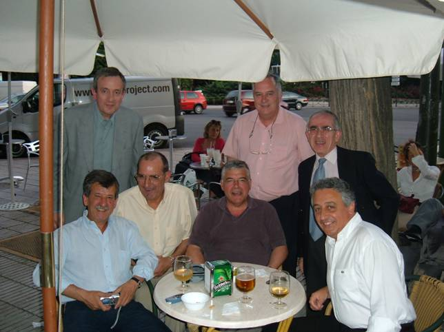
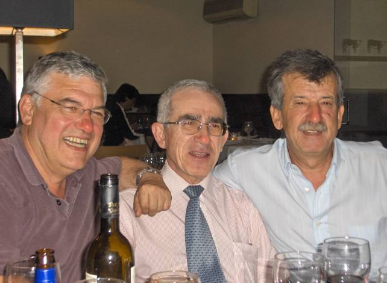

8.06.2006. Reencuentro de una panda piraos. Crónica de(sde) URGENCIA(S)
Queridos Luis, César, Antonio, Salvador, Paco, Jorge, José Mª, Xavy y todos aquellos a quienes pueda interesar: Ya sabéis que el pasado día 7 nos reunimos algunos señores de los que estuvimos en aquel sitio. Perdonarme pero siguiendo con las nuevas políticas de seguridad impuestas desde la página y que han presidido esta convocatoria, llamaré a los reunidos con seudónimos para que en ningún momento puedan ser reconocidos, cual es su deseo. Y así, hablaré de la Sra. Telva y de los señores Serrallo, Bernabé, Periáñez, Marcelino, Ansar, Escritor y Sorry. Para este tipo de reuniones, tras la experiencia vivida, tengo que haceros algunas recomendaciones que os pueden venir bien en próximos encuentros:
 Los señores de la historia. Imagen muy mal tomada por la señora Telva. El día anterior al encuentro, yo, que no podía aguantar más de pura ansiedad, llamé al Sr. Serrallo y estuvimos charlando y tomando unas cervezas. El Sr. Serrallo recibió un chorreo de su mujer por haberla metido prisa a ella para ir a visitar a uno de los amigos de sus dedos de la mano, no me preguntéis lo que quiso decir con ello, y aparecer ahora con un advenedizo que además tenia que ver con la famosa página en la que figura una foto suya nada favorecedora. Aconsejo al WM, que no sabe como se las gasta la del Círculo de Bellas Artes, retirar o cambiar la foto que de ella figura en la página. Avisado queda. Cuando el día “D” llegué al lugar del encuentro, ya estaban allí los señores Serrallo y Periáñez. Esta vez si acertamos en la decisión del abrazo mutuo el Señor Periáñez y yo, y fue todo mucho más coordinado. Los señores Serrallo y Periáñez ya se habían pedido, y metido en su cuerpo serrano sendas bebidas, alcohólicas por supuesto, para poder tomarse unas pastillas para no se qué males que les traían de cabeza. Llegó a continuación el Sr. Escritor, que venía, según él mismo confesó, de otras dos reuniones, una a la hora del desayuno (que ya es tener ganas) y otra a la de la comida, de celebrar los vigesimoquintos aniversarios de no se qué cosas del ICAI y del ICADE. Ya podéis imaginar el estado en el que llegó el Sr. Escritor, con la mezcla de chocolate con churros, fino, tortilla de patata y anís del mono. A pesar de todo, la coordinación del saludo con él fue buena. Temblorosa, pero buena. Llegaron luego el Sr. Ansar, la Sra. Telva , el Sr. Bernabé y, finalmente, el Sr. Marcelino. No se presentaron con ellos problemas en el saludo. Al rato, tras sacar unas fotos, beberse lo que no está en los escritos y visiblemente afectado por ello, se ausentó el Sr. Ansar por, según dijo, carecer de apetito, haber recibido ordenes de la presidenta de la República Independiente de su casa, porque no entendía nada de lo que allí se decía y porque el WM le había pedido urgente las fotos del evento para colgarlas en la página antes de irse a la cama. Con él abandonó el lugar la Sra. Telva , que no pudo soportar la actitud insidiosa de uno de los señores de la reunión, de cuyo nombre no quiero acordarme. Tengo que comunicaros con gran dolor de mi corazón que, profesionalmente no nos ha ido nada bien en la vida y lo entenderéis enseguida: El Sr. Periáñez que suponíamos galeno mejorador de apariencias, tras intentarlo con Rosy de Palma, toca el laúd en una banda dominguera del Norte y, en ocasiones se desplaza a Madrid acompañado de su familia y otros, para ganarse unas perras entreteniendo viandantes en el metro. Forman lo que llaman “la banda de la Maru ”. Es, según dice, una banda de rock rústico de lomo ancho. Lamentable. El Sr. Escritor , que suponíamos muñidor de grandes fusiones de empresas, tras el fallido intento de la de Gas Natural con ENDESA, ha venido a menos y toca el clarinete en otra banda dominguera que, además le hace la competencia a la del Sr. Periáñez en el metro de Arguelles. Los fines de semana parece que se desplaza a la localidad alicantina de Altea para mitigar su afición a los deportes náuticos limpiando la cubierta de los yates fondeados en el puerto del club de la localidad. El Sr. Serrallo , del que siempre esperábamos recomendaciones oportunas de inversiones, y consejos de sobre cómo han de llevarse los bultos para que alguna vez no se pierdan en los aeropuertos, parece que no acertó ni con las inversiones en sellos que había definido como muy rentables, ni con el servicio de la T-4 , y es jardinero de alturas podando palmeras para el Ayuntamiento de la capital del reino. El Sr. Bernabé , que creíamos brillante calculista de algoritmos aleatorios imposibles, muestra a quien la quiera contemplar, una tarjeta de profesional en la que se lee en perfecto inglés “Nothing Support Manager” y debajo del logo de la empresa la frase unamuniana “do they invent”. Parece que suspendió en algún curso de formación, a algún competente profesional de la cosa pública, que donde las dan las toman, y no le fue renovado el contrato en los mismos términos que el anterior. Os ruego no le hagáis la traducción, ya sabéis que era de francés y desconoce su significado. No os preocupéis por éste, ya que su mujer le filtra los escritos y, tras hablar yo con ella, no lo leerá. El Sr. Marcelino , al que creíamos rapidísimo y certero consejero de los ministros charnegos de las industrias nacionales, fue pillado en la condonación de la deuda de su patrón a determinado partido político y enviado a sacar fotos de cumples a los McDonald's. Y yo mismo , otrora brillante soldado de fortuna, me he convertido en un triste contador de historias mentirosas. Finalmente y no he querido asignárselo a nadie, ni siquiera bajo seudónimo, porque yo sé de su delicadísima situación económica, queda para mí el secreto del que se quedó con los diez euros que sobraron de la celebración del evento. La vida es durísima. Así que ya veis que no todo ha sido felicidad en estos años que hemos estado sin vernos. A pesar de todo, estuvieron muy alegres, me comieron muy bien, me bebieron mejor (Ribera del puto Duero, que encareció la cena en un 30% a los funcionarios), se supo finalmente quien iba con la Chogi , quienes rompieron las cebolletas de las duchas y se homenajeó al autor de aquella importantísima “fazaña”, y nos dieron las diez y las once, las doce y la una y las dos y las tres, y al amanecer nos encontró la luna: Al Sr. Marcelino , pegado, demasiado pegado contra la tuneladora del Alcalde del foro, que está agujereando desde la M-30 hasta Sevilla capital (D.F. en el nuevo estatuto andaluz), al pretender coger un atajo hacia la M-300 , que el mismísimo Sr. Bernabé le había recomendado al Sr. Sorry para salir hacia Andalucía. El seguro le ha dado de baja por especial siniestralidad.  Los ojos rojos no suponen ningún defecto en la toma de la fotografía, se explican por motivos bien distintos. Al Sr. Periáñez , encima de la bandeja trasera del coche que con dificultad conducía el Sr. Serrallo. Posteriormente, gracias a los bomberos y al amable botones que hacía la segunda imaginaria en su hotel, se le pudo sacar del coche y subir a la habitación en el carro portamaletas. Inmenso. Al Sr. Escritor , repitiendo la famosa frase “no estuvo bien aquel régimen, no estuvo bien”. Realmente dañado, muy dañado. Al Sr. Bernabé , con 27 puntos perdidos del nuevo carnet, suma de las irregularidades que cometió en la conducción hasta su casa y otros 27 que le tuvieron que dar en la crisma, en la casa de socorro, por lanzarse contra una farola paradora de turismo. Al Sr. Serrallo , en la comisaría de Centro por haber vociferado frases irrepetibles a las trabajadoras del amor que nos encontrábamos inevitablemente por el camino. 2000 € de fianza hubo que pagar y además no quería salir porque se creía que aquello era su gimnasio e intentaba inútilmente doblar los barrotes de la celda. Doloroso. Al Sr. Sorry , en la sala de urgencias del Gomez Ulla, por haber lanzado no se qué impropios improperios, de forma involuntaria, contra los moradores del barrio que llaman Chueca en que el Sr. Serrallo lo dejó a propósito y sin advertirle de nada, intentando averiguar mediante llamada telefónica al mismísimo Patronato, quien va a ser el próximo mando del lugar durante la Semana Santa de 2007, para prevenirle con mucha antelación, del difícil manejo de esta panda piraos. A pesar de todo, si tenéis la oportunidad de ir a una de estas reuniones, hacedlo a pecho descubierto y sin resabios porque no vais a engañar a nadie. Si lo hacéis así, seréis muy bien recibidos, lo pasaréis magníficamente y reconoceréis al niño que llevamos dentro. Continuará . . . . o no. Gracias por leerme. |